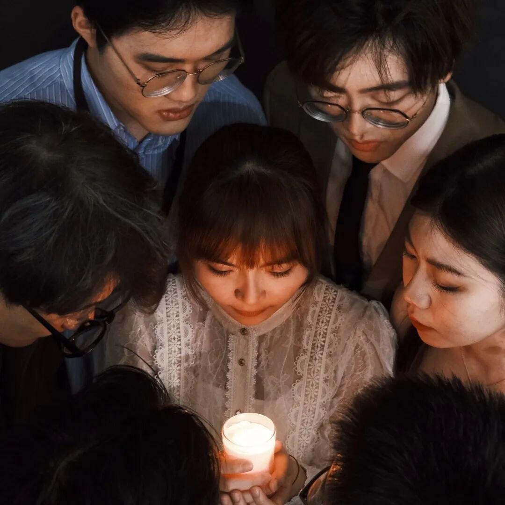
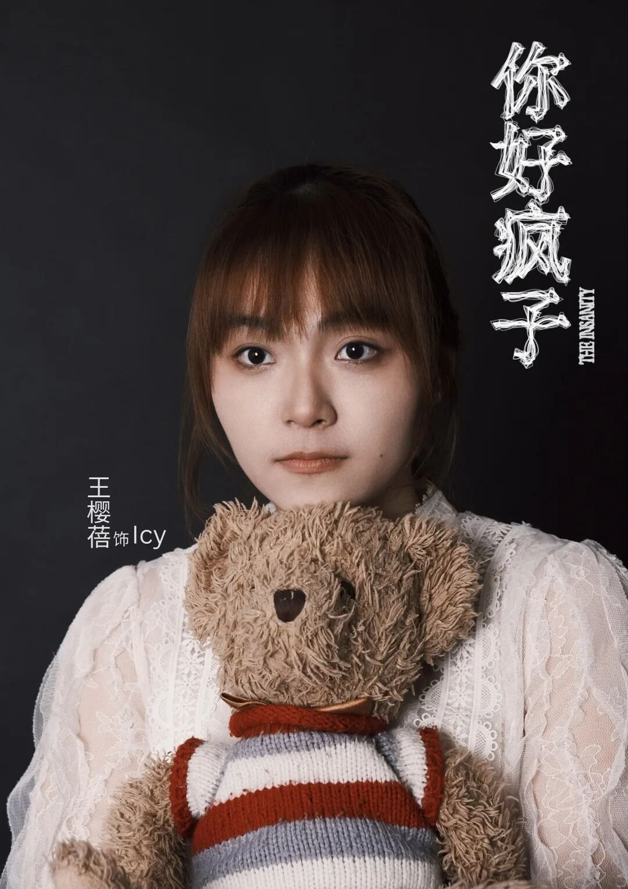
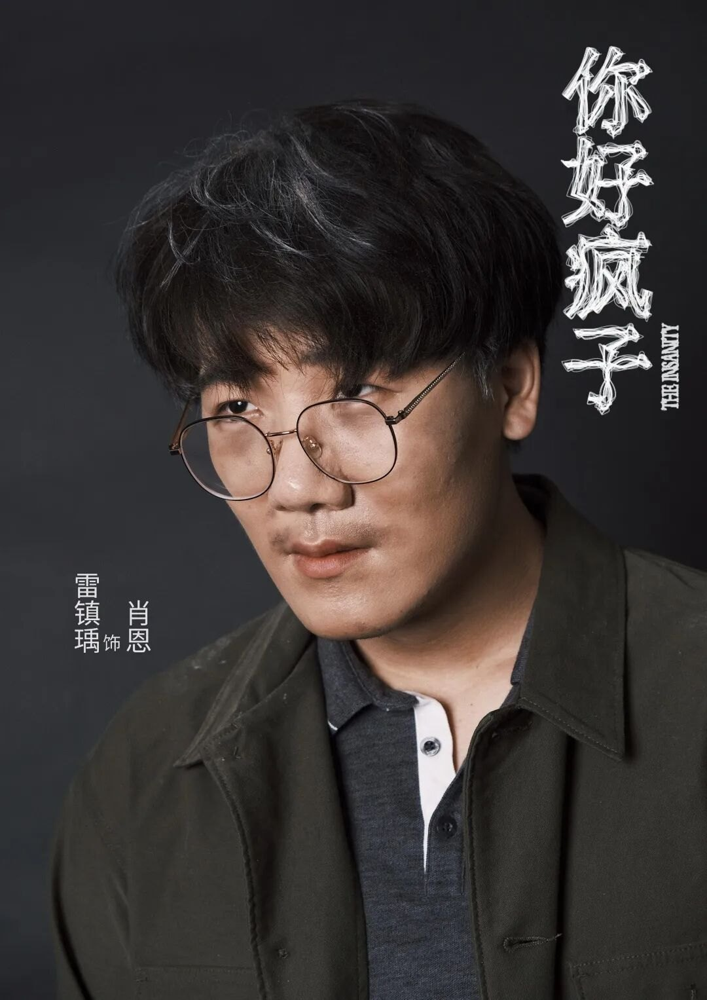
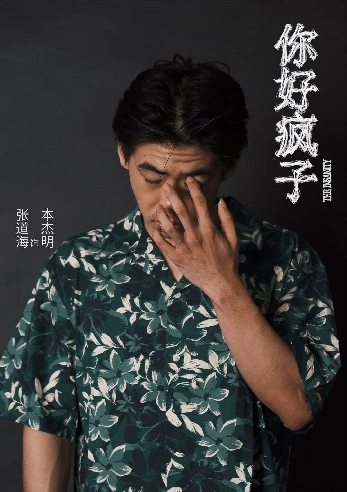
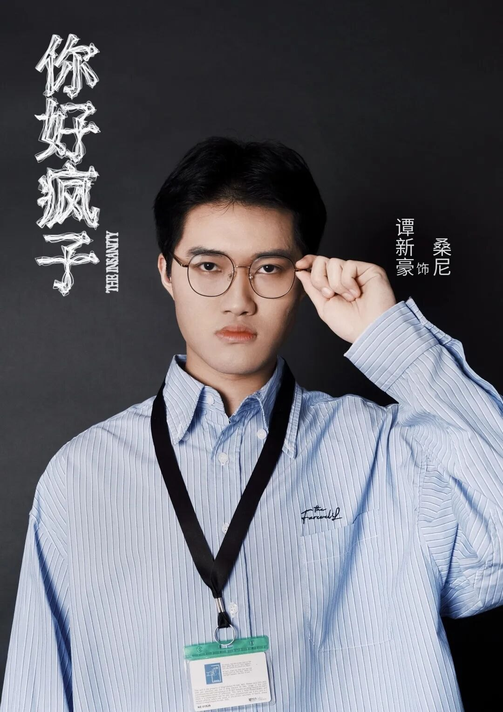
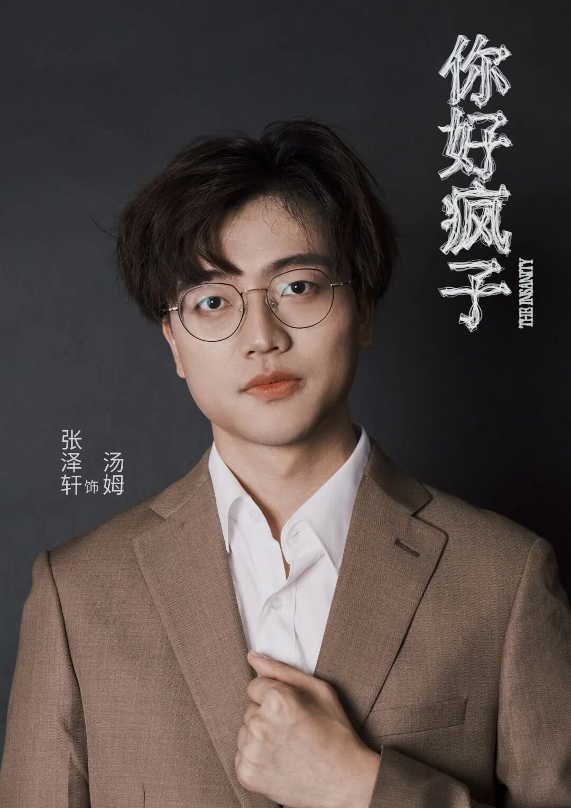
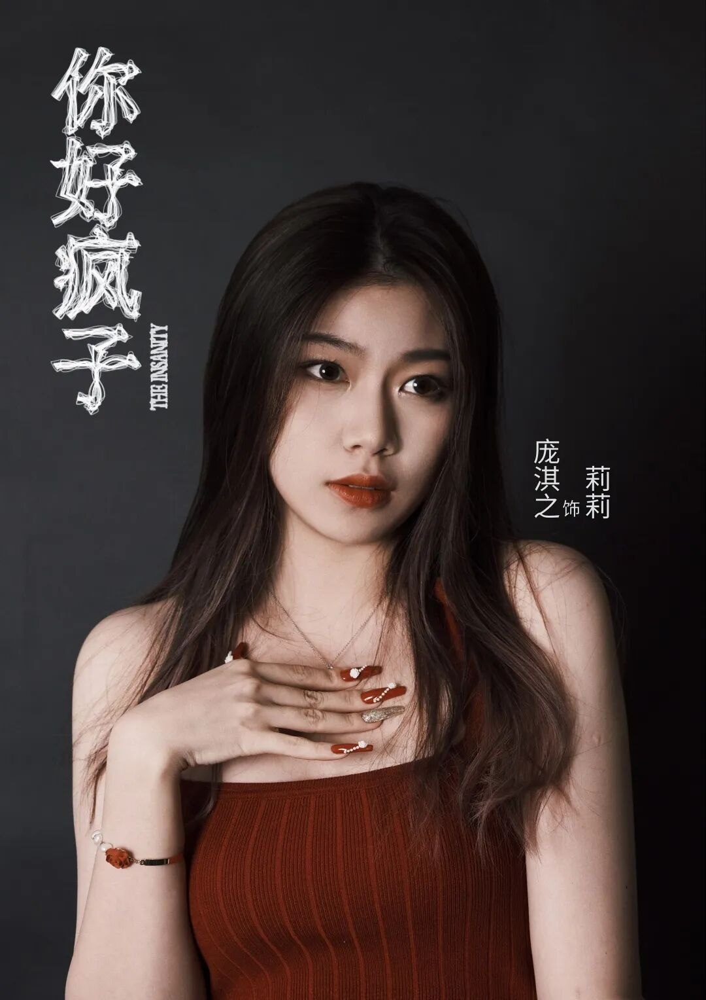
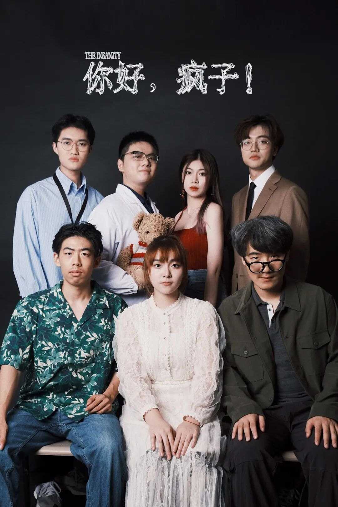

Technical art highlights
- Designed a contemporary ensemble around one signature per character
- Secured SGD 7,000 sponsorship and managed the production budget
- Ran end-to-end production: timeline, resources, risk, cross-functional coordination
01Overview
Costume Designer and Assistant Producer for The Insanity (你好，疯子！), NUS King Edward VII Hall Chinese Drama – a contemporary chamber piece where clothing has to do the characterization, and where I also ran the money and the schedule.
I secured SGD 7,000 in external sponsorship and managed the production budget for a performance seen by 600 people.
02My contributions
Costume design
Designed the principal looks so each reads instantly on its own and still sits together as one ensemble under a single stage light.
Sponsorship
Secured SGD 7,000 in external sponsorship by writing funding proposals, pitching to stakeholders and negotiating partnerships.
Production management
Oversaw timeline planning, budget tracking, resource allocation, risk coordination and cross-functional collaboration end to end.
03The ensemble
In a contemporary setting, clothing carries character: a floral shirt, a lab coat, a lanyard and pinstripe, a tailored suit, a red slip dress. Each look is a silhouette-and-colour read at distance, then a texture read up close.









04Challenges & solutions
Contemporary clothes have no costume shorthand
In a period piece the palette does the work; in modern dress everyone is just wearing clothes, and characters blur together.
One signature per character
Gave each character a single dominant garment idea – pattern, uniform, cut or colour – and kept everything else neutral, so the ensemble stays readable as a group shot.
A sponsored production has a hard budget
Design ambition and available money were set by different people at different times.
Own both sides
Running sponsorship and the budget myself meant costume decisions were made with the real number in view, not negotiated after the fact.
Many moving parts, one date
Rehearsal, build, publicity and venue all converged on a fixed performance date.
Timeline and risk tracking
Planned the schedule backwards from the performance with explicit owners and risk coordination across functions.
05Why it matters for technical art
- Producing a show on a sponsored budget is the same discipline as the production and pipeline management side of TA work: fixed date, fixed budget, cross-functional dependencies.
- Designing for instant readability in a group shot is character look-dev – the silhouette and value read matter before any detail does.